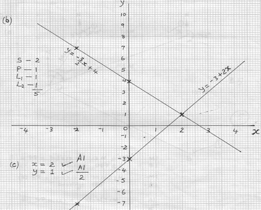

- 8 ÷ 2 + 12 x 9 - 4 x 6
56 ÷ 7 x 2
=
-
-4 + 108 - 24
8 x 2
-
80
16
= 5
Distance = 56 x 5⁄2
= 140 km
3.)
y = - 3⁄2x + ½
m = - 3⁄2
when y = 0, 3
x = 1, x = ⅓
when x = 0, 2
x = 1, x = ½
4.)
0.1555 + (0.2809 x 2) + 0.1175
= 0.1555 + 0.5618 + 0.1175
= 0.8348
= 0.835
5.)
(33)2⁄3 x (34⁄24) - 4
=
-
32 x 3-1
2-1
-
3_2+ -1
2-1
= 31 x 21
= 6
Area = ½ x 7.5 x 9.2⁄2 x 2
= 34.5 cm2
7.)
Let daughter's age be y yrs
Fathers age is 3y yrs
3y + 12 = 2(y + 12)
= 2y + 24
y = 24-12
= 12
Fathers age is 12 x 3 = 36 yrs
8.)
9.)
D = M⁄V
V = 63⁄7000 = 0.009m3
X ─ section area = 12 x 15 - 12 x 10
Volume = X ─ section area x length
length of pipe = 9000 ÷ 60
10.)
11.)
2x + 3y = 1 .....(i)
multiply (i) x 2 and (ii) x 3 then add the two
4x + 6y = 2 ...(i x 2)
therefore x = 2
from equation (i) replace x with 2
2(2) + 3y = 1
12.)
M.P x 90⁄100 = 3150
M.P = (3150 x 100)⁄90
13.)
let it be n
therefore n = 3.717171...
10n = 37.1717...
14.)
No. of huts increase, workers increase in the ratio 9:5
people required = 30⁄27 x 9⁄5 x 7
= 14
15.)
x + 5x = 180°
Angle of triangle at the centre of polygon
180° - 150° = 30°
Number of sides = 360° ÷ 30°
16.)
CN = 4.3 CM ±1MM
AB = 8 CM
Area of △ ABC = ½ x 8 x 5 = 20 cm2
17.)
y = -3 + 2x

Area of ceiling (10x7) = 70 m2
Total surface area = 70 + 56 + 80 = 206 m2
19.)
b) (i) PR = 11.3 x 10 = 113M ±1M
(ii) PR = 11.3 X10 = 113M ±1M
(iii) SR = 10.5 x10 = 105 M ±1M
21.)
Area P = ½ x 120 x 70 = 4200 m2
R = ½ x 80 x 25 = 1000 m2
S = ½ x 120 x 80 = 4800 m2
T = ½ x 60 (80 + 50)= 30 x 130
V = ½ x 100 x 50 = 2500 m2
Total Area = 4200 + 4600 + 1000 + 4800 + 3900 + 2500 = 21000 m2
21000 ÷ 10,000
= 0.009 x 100000
= 9000cm3
180 - 120
= 60 cm2
= 150cm = 1.5m
3x - 2y = 8 .....(ii)
9x - 6y = 24 ...(ii x 3)
13x = 26
3y = 1 - 4
y = -3 ÷ 3
y = -1
= 3500/=
1000n = 3717.1717...
1000n - 10n =3717.1717 - 37.1717
990n = 3680
n = 3680 ÷ 990
= 371⁄99
No. of day decrease, workers increase in the ratio 30:27
Days
Huts
People
30
5
7
27
9
?
6x = 180°
x = 180° ÷ 6
= 30°
= 12
18.)
X
-2
0
2
Y
7
4
1
X
-2
0
2
Y
-7
-3
1
Area of walls (7 x 4)2 = 56 m2
Area of walls (10 x 4)2 = 80 m2
Cost of painting = 206 x 200
= 41,200
20.)
Bearings 067 ±1°
Bearings 180° 
Q = ½ x 80 (75 + 40) = 40 x 115
4600 m2
3900 m2
= 2.1 ha